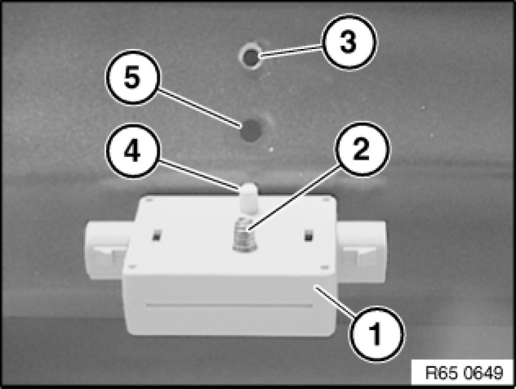

Removing and Installing/Replacing Blocking Circuit
65 24 020 - Removing and installing or replacing blocking circuit

Necessary preliminary tasks:
- Remove panel for rear lid .
Unlock plug connections (1) and disconnect.
Unscrew bolt (2).
Remove blocking circuit (3) in direction of arrow.

Installation:
Fit blocking circuit (1) so that screw (2) engages thread (3) and locating pin (4) engages bore (5).